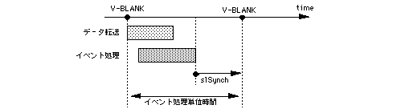

Return to previous page | Return to menu | Go to next page
void
Other functions
Synchronization with event processing unit time
void slSynch()
None
Wait until the event processing unit time is reached.
None
Switches (displays) the screen in the drawing processing unit specified by the function “slInitSystem”.
The drawing processing unit is specified by the number of V blanks. One blank is 1/60 second for non-interlace and 1/30 second for double-dense interlace.
See also the function “slInitSystem”.

Reference: Chapter 8 Scroll
slSynch